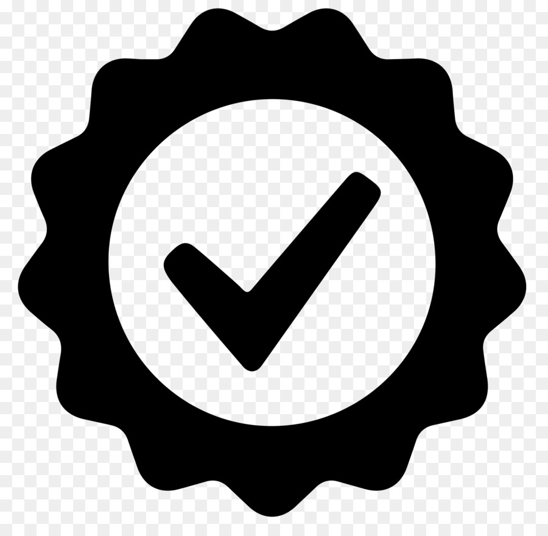
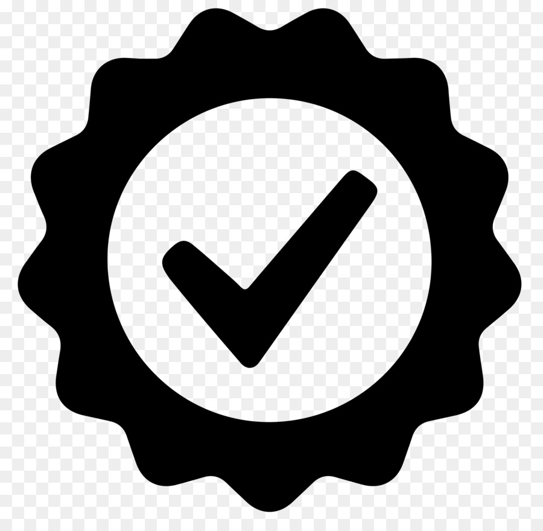

Термины и понятия
• ПК - персональная электронно-вычислительная машина, однопользовательская (предназначенная для использования одним пользователем), имеющая эксплуатационные характеристики бытового прибора и универсальные функциональные возможности. ПК может быть стационарным (чаще всего настольным) или портативным (лептоп, планшет).
• Антивирусная программа - специализированная программа для обнаружения компьютерных вирусов, а также нежелательных (считающихся вредоносными) программ и восстановления заражённых (модифицированных) такими программами файлов и профилактики — предотвращения заражения (модификации) файлов или операционной системы вредоносным кодом.
• ОС - Операционная Система. Комплекс взаимосвязанных программ, предназначенных для управления ресурсами компьютера и организации взаимодействия с пользователем.
• Лицензия WINDOWS - Официальная версия продукта Microsoft, купленная напрямую или через посредников с включенным в неё ключем активации и доступом ко всем функциям.
• Отформатировать диск - процесс создания файловой системы на его разделе, сопровождающийся удалением данных и составлением новой структуры ФС.
• Компьютерный вирус - вид вредоносных программ, способных внедряться в код других программ, системные области памяти, загрузочные секторы и распространять свои копии по разнообразным каналам связи.
• "Мусор" на компьютере - все файлы, которые считаются не нужными как пользователю так и самому компьюетру. Данные файлы можно удалять собственноручно или с помощью программ (к примеру CCleaner).
• Журнал событий - в Microsoft Windows стандартный способ для приложений и операционной системы записи и централизованного хранения информации о важных программных и аппаратных событиях. Служба журналов событий сохраняет события от различных источников в едином журнале событий, программа просмотра событий позволяет пользователю наблюдать за журналом событий, программный интерфейс (API) позволяет приложениям записывать в журнал информацию и просматривать существующие записи.
• Антивирусная программа TrojanKiller - программа для отслеживания и удаления троянов из системы Windows. Перед обновлением обычный антивирус может пропустить троян на компьютер, который быстро проникает в файловую систему. На помощь приходит Trojan Killer — специфические алгоритмы поиска троянских вторжений в систему позволяют своевременно узнать о наличии вирусов.
• Драйвер - компьютерное программное обеспечение, с помощью которого другое программное обеспечение (операционная система) получает доступ к аппаратному обеспечению некоторого устройства. Обычно с операционными системами поставляются драйверы для ключевых компонентов аппаратного обеспечения, без которых система не сможет работать. Однако для некоторых устройств (таких, как видеокарта или принтер) могут потребоваться специальные драйверы, обычно предоставляемые производителем устройства.
• Утилита - вспомогательная компьютерная программа в составе общего программного обеспечения для выполнения специализированных типовых задач, связанных с работой оборудования и операционной системы.
• Термопаста - многокомпонентное пластичное вещество с высокой теплопроводностью, используемое для уменьшения теплового сопротивления между двумя соприкасающимися поверхностями. Теплопроводящая паста служит для замены воздуха, находящегося между поверхностями, на теплопроводящую пасту с более высокой теплопроводностью.
• Термопрокладка - Это специальный листовой материал (или отдельные пластины), содержащий керамические или графитовые наполнители, которые способствуют лучшей теплопроводности. Между собой термопрокладки различаются толщиной, наполнением, количеством слоев и клеящихся поверхностей.
• DDR2, DDR3, DDR4 - типы компьютерной оперативной памяти. Само понятие DDR - удвоенная скорость передачи данных.


 
